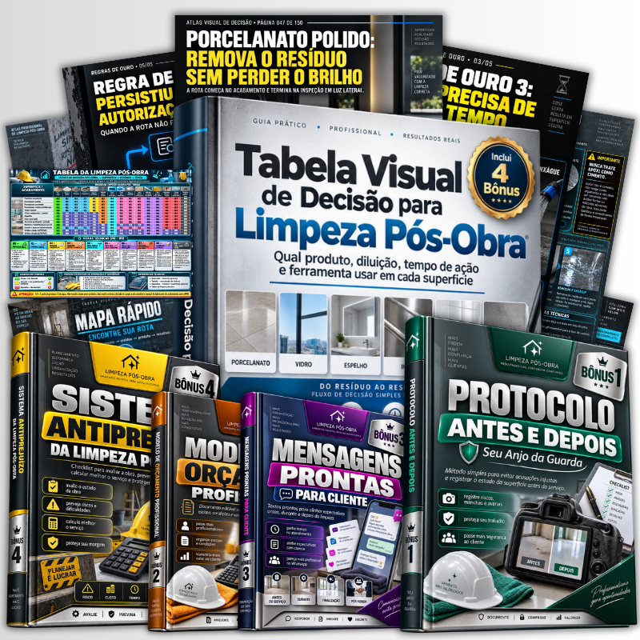
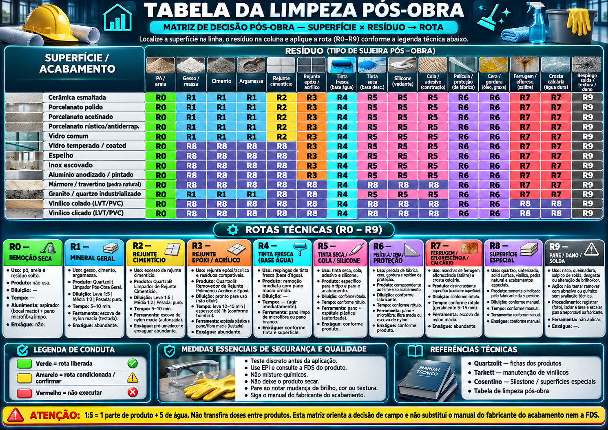
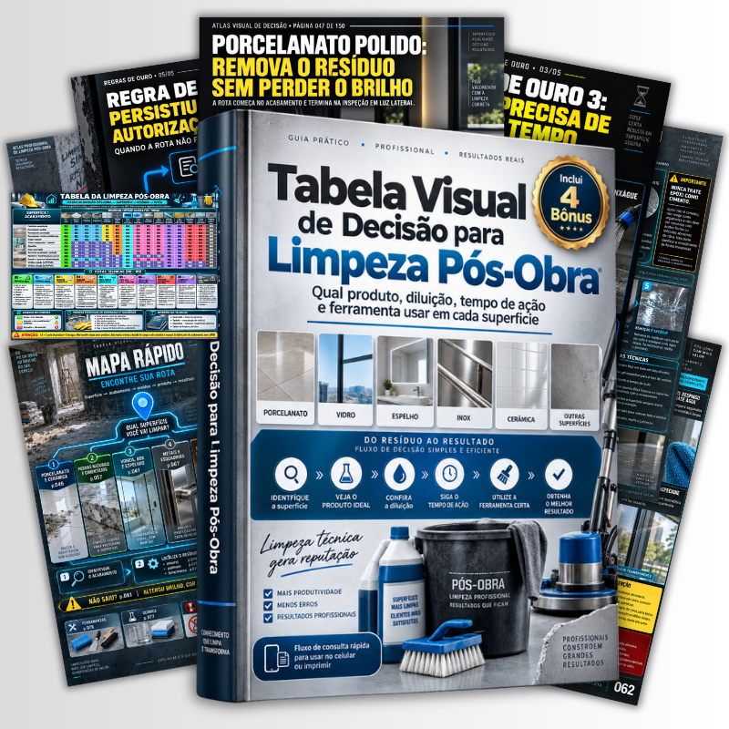
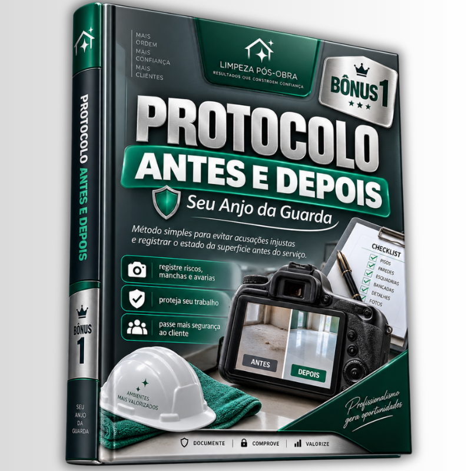
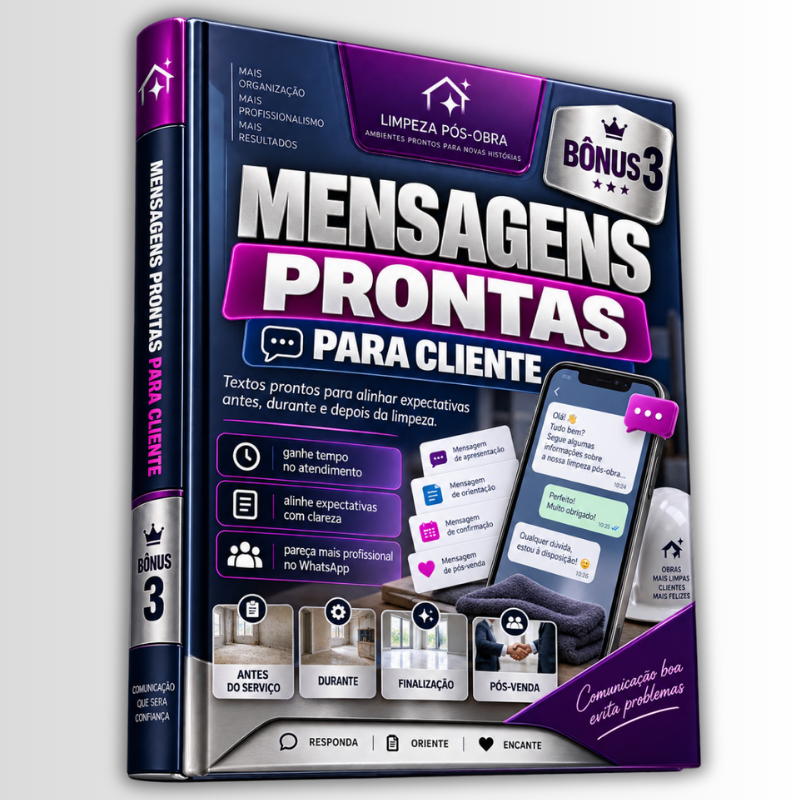
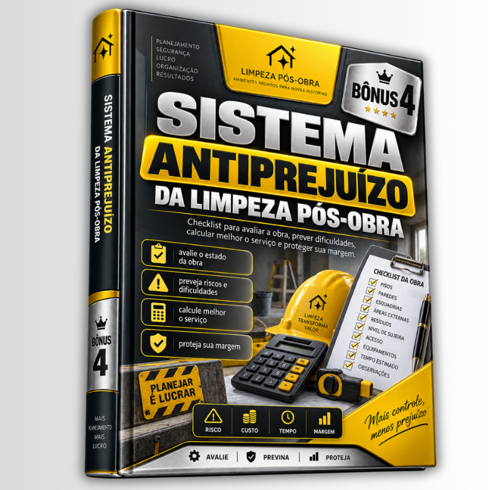
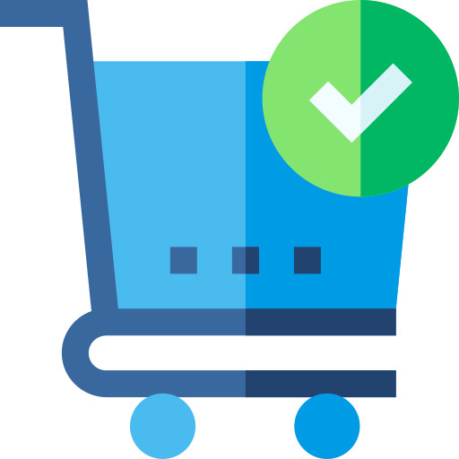

MAPAS PRÁTICOS DE DECISÃO PARA ESCOLHER O PRODUTO CERTO E O QUE FAZER PARA NÃO ARRANHAR OU MANCHAR ACABAMENTOS
Elimine o risco de usar o produto errado, ou de usar do jeito errado, na limpeza pós-obra.

Em vez de testar produto na sorte, você consulta a superfície, identifica o resíduo e segue a rota: químico compatível, diluição, tempo de ação, ferramenta e cuidado antes de avançar.
- Rotas visuais para porcelanato, cerâmica, vidro, espelho, inox e esquadrias
- Produto, diluição, tempo de ação e ferramenta por tipo de resíduo
- Alertas para parar antes de riscar, manchar ou comprometer um acabamento
- Tabela de consulta rápida para compartilhar com a equipe ou imprimir
- Uso imediato no celular, direto na obra
📲 Acesso imediato após a confirmação do pagamento
VEJA O MATERIAL DE CONSULTA QUE VOCÊ VAI LEVAR PARA A OBRA
Inclui a Tabela da Limpeza Pós-Obra para a equipe consultar superfície × resíduo × rota antes de aplicar.

.png)
.png)
.png)
.png)
.png)
.png)
OS FLUXOS DE DECISÃO POSSUEM:
NÃO É SÓ REMOVER SUJEIRA. É REMOVER SEM DEIXAR O PREJUÍZO PARA VOCÊ.
Aproveite a oferta por tempo limitado
ESTE GUIA É PARA QUEM QUER
PARAR DE “PASSAR DE TUDO” NO PORCELANATO
Separar resíduo mineral, película, cola, tinta e crosta antes de escolher o próximo passo.
LIMPAR VIDRO, ESPELHO E INOX COM MAIS SEGURANÇA
Consultar a ferramenta, abrasividade e cuidados antes de atacar respingo ou mancha.
SABER QUANDO TESTAR EM VEZ DE INSISTIR
Reconhecer situação de risco e fazer um teste controlado antes de avançar na área toda.
ORIENTAR A EQUIPE COM A MESMA BASE
Enviar ou imprimir a tabela de bolso para reduzir decisão improvisada do colaborador.
REDUZIR RETRABALHO E DESPERDÍCIO
Usar o químico compatível e respeitar diluição, tempo de ação e enxágue indicado.
EXPLICAR A DECISÃO AO CLIENTE COM CLAREZA
Ter uma rota lógica para mostrar por que o procedimento exige cuidado ou teste.
TUDO O QUE VOCÊ VAI RECEBER
UM GUIA PARA DECIDIR ANTES DE APLICAR, E NÃO DEPOIS DO DANO.
Você abre no celular, encontra a situação e segue a sequência de campo.
- Fluxos por superfície: porcelanato, cerâmica, vidro, espelho, inox e esquadrias
- Método visual: identificar, classificar, avaliar risco, executar e decidir
- Rotas para cimento, argamassa, rejunte, tinta, cola, silicone, cera, crosta e mais
- Rota de acabamentos de alto risco: quartzo, sinterizado, solid surface e vinílico
- Categoria de químico, diluição, tempo de ação e ferramenta recomendada
- Alertas de teste localizado, proteção de adjacências e momento de parar
- Tabela da Limpeza Pós-Obra para imprimir ou enviar à equipe
- Acesso imediato após a confirmação do pagamento

E NÃO PARA POR AÍ. TEM MAIS.
NO PLANO COMPLETO, VOCÊ TAMBÉM RECEBE
🎁 4 BÔNUS EXCLUSIVOS DE CAMPO

BÔNUS 1Protocolo Antes e Depois: Seu Anjo da Guarda
Registre condição, área sensível, teste e entrega para não assumir depois um risco, mancha ou pendência que já existia.
Valor:Modelo de Orçamento Profissional
Documento editável para apresentar escopo, condição, valor e limites do serviço com muito mais clareza.
Valor:
BÔNUS 3Mensagens Prontas para Cliente
Textos para alinhar expectativas antes, durante e depois da limpeza, sem improvisar na hora da pressão.
Valor:
BÔNUS 4Sistema Antiprejuízo da Limpeza Pós-Obra
Checklist de decisão para prever dificuldade, proteger margem e saber quando testar, reorçar, pausar ou não executar.
Valor:ESCOLHA A MELHOR OPÇÃO PARA VOCÊ
PARA CONSULTA NA OBRA
PLANO BÁSICO
O essencial para decidir o que usar antes de aplicar.
- Guia Visual de Decisão para Limpeza Pós-Obra
- Fluxos por superfície e tipo de resíduo
- Rotas de atenção para acabamentos de alto risco
- Tabela de consulta rápida para imprimir ou enviar à equipe
- Acesso imediato
De R$27,90 por:
Pagamento no cartão disponível no checkout
Você economiza R$10,00QUERO O PLANO BÁSICO⚡ MAIS VENDIDO
GUIA COMPLETO COM PROTEÇÃO DE CAMPO
PLANO COMPLETO
GUIA PRINCIPAL, TABELA DE ALTO RISCO E 4 BÔNUS PRÁTICOS
Leve todo o plano básico e materiais extras para organizar serviço, equipe e cliente.
- Tudo do Plano Básico, incluindo o Guia e a Tabela de Bolso
- Material extra: Tabela de Limpeza para Superfícies de Alto Risco
- Bônus 1: Protocolo Antes e Depois
- Bônus 2: Modelo de Orçamento Profissional
- Bônus 3: Mensagens Prontas para Cliente
- Bônus 4: Sistema Antiprejuízo da Limpeza Pós-Obra
- Acesso imediato
De R$37,90 por:
Pagamento no cartão disponível no checkout
Você economiza R$10,00QUERO O PLANO COMPLETOGARANTIA DE 15 DIAS. ZERO RISCO PARA VOCÊ.
Se o material não fizer sentido para a sua limpeza ou não atender sua necessidade, você pode solicitar o reembolso dentro do prazo de garantia. Sem burocracia. O risco fica todo do nosso lado.
COMO É O ACESSO
Siga os passos abaixo para garantir seu material.

Conclua sua compra
Após a confirmação, o acesso é liberado automaticamente.
- Pagamento rápido e seguro
- Confirmação por e-mail
- Acesso imediato ao material
Entre na área de membros
Todos os materiais ficam organizados para você consultar quando precisar.
- Navegação simples
- Arquivos separados por finalidade
- Acesso pelo celular
Baixe e compartilhe
Use o guia no celular ou envie a tabela rápida para cada colaborador.
- Consulta offline disponível
- Material para imprimir
- Equipe na mesma base
Consulte antes de aplicar
Identifique superfície e resíduo para seguir uma rota de trabalho mais segura.
- Menos tentativa e erro
- Mais clareza na decisão
- Procedimento mais organizado
PERGUNTAS FREQUENTES
Para quais superfícies o guia foi organizado?+
O material traz rotas para situações de pós-obra em porcelanato, cerâmica, vidro, espelho, inox, esquadrias e orientações de atenção para acabamentos de alto risco. Sempre confira o rótulo, a FDS e a orientação do fabricante do acabamento.
O acesso é imediato após a compra?+
Sim, você terá acesso imediato ao material após a confirmação do pagamento.
Posso imprimir e compartilhar a tabela com a equipe?+
Sim. A Tabela da Limpeza Pós-Obra foi incluída justamente para consulta rápida no celular ou impressa durante o serviço.
E se eu não gostar do material?+
Você tem 15 dias para solicitar o reembolso, sem burocracia.
O material substitui o rótulo do produto ou o manual do acabamento?+
Não. Ele organiza a decisão de campo e indica pontos de atenção. Diluição, compatibilidade e condições de uso devem seguir a orientação do fabricante, com teste localizado sempre que houver risco.
Os bônus são incluídos no plano básico?+
Não, os bônus estão disponíveis apenas no plano completo.